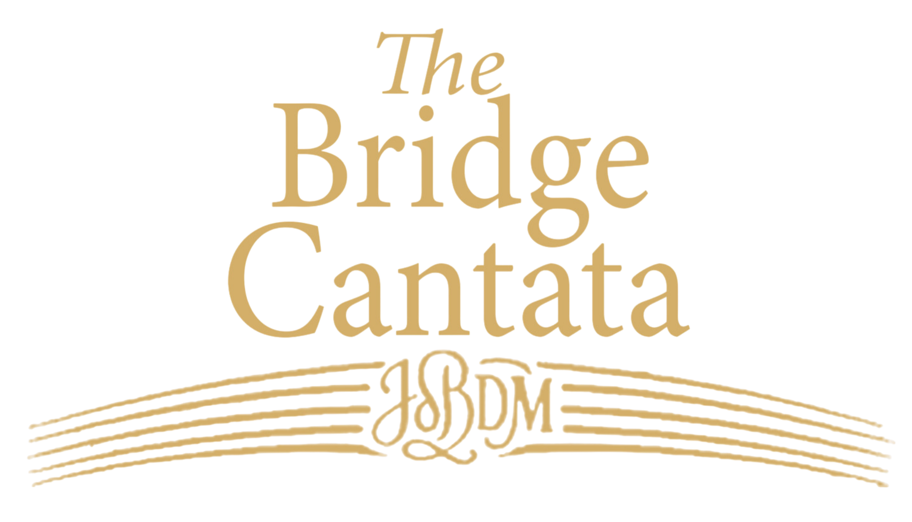

THE BRIDGE CANTATA A DIALOGUE BETWEEN CENTURIES
Interdisciplinary performance exploring reconciliation through music,
testimony, movement, and collective participation.
This project is co-funded by the European Union.
District of Reconciliation
About the project
The Bridge Cantata is a socially engaged interdisciplinary project developed within the “Art for Reconciliation” programme. It brings together music, text, movement, and collective participation to explore memory, dialogue, and the possibility of connection across time and experience.
By combining the music of J. S. Bach with a newly commissioned work by David Mastikosa, the project creates a space where historical and contemporary voices meet, forming a symbolic bridge between centuries.
Through this encounter, the project connects historical memory, contemporary artistic expression, and the lived realities of communities in the region.
Rather than functioning only as a concert, The Bridge Cantata is conceived as a shared experience — one that invites listening, reflection, participation, and exchange between artists, young musicians, and audiences.
Why reconciliation
Building dialogue through shared artistic experience
The Bridge Cantata responds to the complex social and historical realities of the Western Balkans by creating a space for listening, reflection, and encounter.
Rather than approaching reconciliation as an abstract political idea, the project explores it as a lived and collective process — one that takes place through presence, participation, memory, and the willingness to hear one another.
Through music, testimony, and movement, the project brings together artists, young musicians, and audiences in an environment where dialogue is not explained from a distance, but experienced directly.
Masterclass
Bach Chorales — Voice, Text, Structure
Date: 18 April 2026
Location: Eđšeg, Novi Sad
Open to: singers, musicians, students, and all interested participants
Participation: free of charge
This two-day masterclass explores Bach’s chorales as a meeting point between voice, rhetoric, and musical structure.
Participants will work on vocal technique, text interpretation, and the deeper meaning of chorale poetry, connecting musical expression with themes of memory, reflection, and reconciliation.
Selected participants will have the opportunity to take part in the final performance of The Bridge Cantata on 9 May.